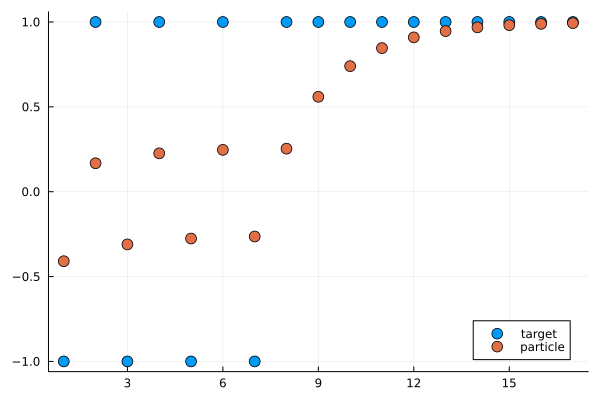
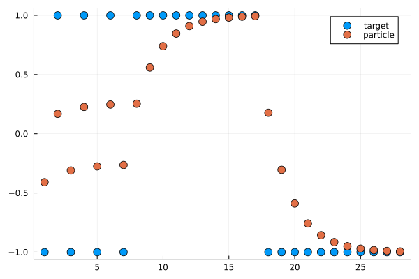

Controlling a Particle Tracker
A demonstration of the
Datacontrol for online training, with callbacks
The source for this demonstration can be found here.
using Plots
using IterationControlConsider an object that tracks a particle in one dimension, moving in discrete time at a speed proportional to the distance away from some moving target. We are viewing this particle as a toy example of online learning and call the constant of proportionality η a learning rate.
The particle is initially at rest at the origin, which is also where the target begins.
Calling train! on the particle moves it along for the specified number of time steps, while calling ingest! updates the target position ("data ingestion").
mutable struct Particle
position::Float64
target::Float64
velocity::Float64
η::Float64 # learning rate
Particle(η) = new(0.0, 0.0, 0.0, η)
end
Particle(; η=0.1) = Particle(η)
loss(model::Particle) = abs(model.target - model.position)loss (generic function with 1 method)A method to train for one time step:
function train!(model::Particle)
model.velocity = model.η*(model.target - model.position)
model.position = model.position + model.velocity
end;And for multiple time steps:
function train!(model, n)
foreach(1:n) do _
train!(model)
end
return nothing
end;A method for updating the target:
function ingest!(model::Particle, target)
model.target = target
return nothing
endingest! (generic function with 1 method)Lifting the train!, loss and ingest! methods to IterationControl.jl:
IterationControl.train!(model::Particle, n::Int) = train!(model, n)
IterationControl.loss(model::Particle) = loss(model)
IterationControl.ingest!(model::Particle, datum) = ingest!(model, datum);Lets train our particle by alternatively setting the target position to -1 or +1 every 5 time steps, for a total of 40 time steps (four -1/+1 cycles). We will then then allow our particle to "cruise" with the target fixed thereafter (the provided data iterator having been exhausted). This cruising is allowed to continue until the particle is within 0.01 units of the target.
We use a learning rate of 0.1.
model = Particle(0.1)
data = repeat([-1, 1], outer=4)8-element Vector{Int64}:
-1
1
-1
1
-1
1
-1
1traces = IterationControl.train!(
model,
Data(data),
Step(5),
Callback(model->model.target),
Callback(model->model.position),
Threshold(0.01),
TimeLimit(0.005),
)6-element Vector{Any}:
ControlTrace{<:Data}
ControlTrace{<:Step}, ending (new_iterations = 85, new_steps = 17)
ControlTrace{<:Callback}, ending (called_back = 1.0,)
ControlTrace{<:Callback}, ending (called_back = 0.9934860451342596,)
ControlTrace{<:Threshold}, ending (loss = 0.006513954865740357, excess = -0.0034860451342596434)
ControlTrace{<:TimeLimit}, ending (time = Dates.DateTime("2026-10-19T09:25:05.875"),)target_positions = traces[3].called_back
particle_positions = traces[4].called_back
fig = scatter(target_positions, label="target", ms=6);
scatter!(fig, particle_positions, label="particle", ms=6);
savefig(fig, "particle.svg");
losses = traces[5].loss17-element Vector{Float64}:
0.59049
0.8323015599
0.689514251894649
0.7738287293987287
0.7240418735773446
0.7534405140713137
0.7360809108460299
0.7463315829545278
0.44070133641881915
0.26022973214194844
0.15366305453249895
0.09073649707089537
0.05357899415539302
0.031637860258817985
0.018681840104229352
0.011031439763146467
0.006513954865740357Switching the target just once more to the -1 position and continuing training until the particle and target are within 0.01:
data = [-1,]
traces = IterationControl.train!(
model,
Data(data),
Step(5),
Callback(model->model.target),
Callback(model->model.position),
Threshold(0.01),
TimeLimit(0.005)
)
append!(target_positions, traces[3].called_back)
append!(particle_positions,traces[4].called_back)
fig = scatter(target_positions, label="target", ms=6);
scatter!(fig, particle_positions, label="particle", ms=6);
savefig(fig, "particle2.svg");[ Info: final loss: 0.006066681833463705
[ Info: Stop triggered by EarlyStopping.Threshold(0.01) stopping criterion.

This page was generated using Literate.jl.